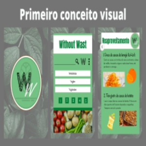
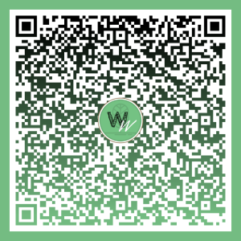

WithoutWaste foi um projeto desenvolvido para a conclusão do meu curso técnico no senai,
onde as equipes formadas entre alunos do terceirão foram "contratadas" por equipes do segundo ano.
Minha equipe foi "contratada" pelos criadores do WithoutWaste. O projeto inicial era de um app mobile
de receitas saudáveis e sustentáveis, fossem veganas, vegetarianas, livres de glúten, ovos, leite etc.
Essas características seriam separadas em categorias dentro do app. Havera também um sistema de cadastro
e login para os usuários. Essa imagem acima é da primeira identidade visual do app, idealizada pelos
contratantes,
ao lado do desenvolvido, já aplicado nos padrões do Android. Sofreria muitas mudanças apartir daí, como
todos os
outros aspectos do projeto, que também sofreram muitas mudanças desde a concepção. Fosse por viabilidade
ou usabilidade.

Acesso ao Projeto
Para ver todas as imagens fornecidas à minha equipe de desenvolvedores acesse o link do CANVA
ou escaneie o QR Code ao lado.

Resultado final
O projeto apresentado ao final do projeto possui muitas mudanças visuais e funcionais
se comparado ao modelo inicial. Na imagem abaixo, fotos do resultado e um QR Code que leva
um drive que contém o APK de instalação do app.